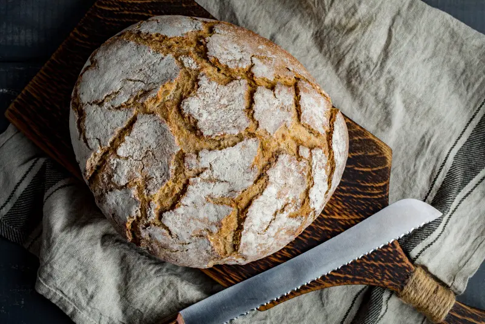

Freshly Baked Loaf of Bread: Gratitude
Gratitude is a feeling of thankfulness and appreciation for the positive things in one's life. It can be whether they come from other people, circumstances, or experiences. It involves everything recognizing the kindness, generosity, or benefits received and feeling thankful for them. Gratitude can be expressed through words, actions, or simply a reflection on the things one is grateful for. It's often seen as a key factor in promoting emotional well-being, happiness, and positive relationships.
A freshly baked loaf of bread is dough that has just been prepared and taken out of the oven. It is often still warm, with a crisp golden-brown crust and a soft airy interior. It is made from the most basic of the basics ingredients like flour, water, yeast, and salt. The aroma of freshly baked bread is rich and comforting, it evokes feelings of warmth and home. Its flavor is typically well-balanced, with a slight tang from fermentation. The texture is crisp on the outside and tender or chewy on the inside. Freshly baked bread is a symbol of comfort and is often associated with bakeries, family kitchens, and moments of togetherness.
How is Freshly Baked Loaf of Bread Gratitude?
A freshly baked loaf of bread is a profound symbol of gratitude. It captures the essence of appreciation in a simple, yet deeply meaningful way. Bread as a humble and universal food, transcends through cultural boundaries and brings people together, offering nourishment, comfort, and a sense of warmth. The process of baking bread itself, kneading the dough, waiting for it to rise, and watching it transform, it embodies patience, care, and a deep appreciation for life’s simplest pleasures. This act of bread creation mirrors the thoughtful and often quiet nature of gratitude. It doesn’t demand extravagance and finds the beauties in the ordinary.
When the bread is paired with herb butter, the experience is elevated even further. The delicate flavors of the butter enhance the bread, it turns the bread from a basic comfort food into something special and refined. This is much like how gratitude adds depth to life’s simple little moments. As you take each warm and soft bite, you feel not only the physical nourishment from the dough but also the emotional satisfaction that gratitude provides. The warmth of the bread offers comfort, very similarly to how gratitude wraps us in emotional care. It keeps a constant reminder for all of us of the small joys that make life rich. Sharing the loaf invites others into the experience, this fosters a connection and creates a sense of community. This simple act of sharing becomes a tangible expression of thanks, the thoughtfulness behind this speaks magnitudes more than any grand gesture can. In this way, a freshly baked loaf of bread serves not only as a nourishing physical gift but also as a powerful and heartfelt symbol of gratitude.
Palette Freshly Baked Loaf of Bread
Golden Browns
The warm earthy tones of the bread’s crust create an inviting and wholesome atmosphere. This represents the warmth and grounding nature of gratitude. Golden browns evoke a sense of richness and abundance, this embodies the satisfaction that comes to us when we feel grateful.
Creamy whites
The creamy tones of the butter add a touch of gentleness and calm to the palette. It symbolizes the softness and kindness that gratitude brings. It’s a comforting color that balances the darker tones of the bread. It’s a splash of lightness to the nourishment.
Green
Small flecks of green from the herb added into the butter add freshness and vibrancy. This embodies growth, renewal, and the living nature of gratitude. The green hints at the way gratitude often opens us up to noticing and appreciating the small beauty in our lives.
How to make Loaf of Bread
Ingredients!
- active dry yeast
- sugar
- warm water
- salt
- bread flour
- canola oil
Loaf of Bread
- Proofing yeast is the first step to any yeast bread recipe. To do this, add the package of yeast to the warm water. Stir in a half-teaspoon of sugar. The warm water helps activate the yeast and the sugar feeds this microorganism. Let the mixture stand for about 5 minutes. When it looks a bit frothy, you know your yeast is ready for bread baking.
- Next, in the bowl of your stand mixer (or in a very large mixing bowl), whisk together the remaining sugar, salt and three cups of flour. Then add the canola oil and yeast mixture and beat until smooth. You can use the dough hook of your stand mixer or a wooden spoon and a lot of elbow grease. You can even use one of these fancy dough whisks to get the job done.
- Once the dough is smooth, add in the remaining flour a half-cup at a time until you have a soft dough.
- Remove the dough from your mixing bowl and place it on a lightly floured surface like a countertop or table. Make sure you have plenty of room to work. Kneading a batch of dough should take about 5 to 10 minutes. You’ll know your bread dough is properly kneaded when you can stretch a bit of dough between your fingers and get it thin enough to see through it without it breaking—that’s the windowpane test and it means enough gluten has developed in the dough. If the dough tears, keep going.
- After kneading, it’s time to let the dough rest while the yeast does its thing. To proof bread dough, grease your container with a bit of oil or cooking spray and cover the dough with a damp cloth. Let it sit in a warm (at least 70º) environment until the dough doubles in size. It should take about 90 minutes for this recipe, but the timing can vary depending on factors including the temperature of the room. If your home is on the cooler side, check if your oven has a proofing setting (many newer models do) or follow our tips for proofing bread dough in the cold.
- Once the dough has doubled in size, give it a quick check with your fingertips. When you poke the dough, it should slowly spring back. If the dough still feels firm, it needs a bit more time to rise.
- Next, it’s time to punch down. That means taking your fist and pressing it into your bread dough to release some of the air.
- Then remove the dough from its proofing container and divide it in half. You can eyeball this if you like, or use a scale to get the proportions exact.
- After dividing the dough, shape each portion into a loaf. Then place each loaf into a greased loaf pan.
- Once shaped and in the pan, it’s time to proof the bread for a second time. Just like last time, cover the dough with a towel and place in a warm, humid part of your kitchen. Let the bread proof and grow for about another 60 to 90 minutes until it fills the pans.
- Finally, it’s time to bake! Pop the loaves into a 375º oven and bake for 30 to 35 minutes. The loaves should be golden brown. If you want to be sure they’re baked through, use your thermometer to check the internal temperature of the bread. You’re looking for about 185º.
- Once baked, remove from the oven and let the pans cool on a wire rack. After 10 minutes, you can remove the bread from the pan and let the loaves cool completely.
SPARKLE NOTES
- Be sure that your water is the right temperature—aim for 105 to 110ºF. Any hotter and you’ll kill the yeast and have to begin again. This is where a quick-read thermometer comes in handy!
- This recipe calls for bread flour. You can find it in the baking aisle of any grocery store. Bread flour has a bit more gluten in it than traditional all-purpose flour, which makes it ideal for this type of baking. But if you don’t have any on hand, you can easily sub in all-purpose flour.
- Once the dough is smooth, add in the remaining flour a half-cup at a time until you have a soft dough.
- When kneading by hand, you don’t need to worry about over-kneading your dough. You will tire yourself out long before you overwork it.
- Knowing when the bread has doubled in size can be tough for new bakers. It may help to take a photo of your dough at the start of the process.
- Knowing when the bread has doubled in size can be tough for new bakers. It may help to take a photo of your dough at the start of the process. Or use a handy proofing container: The geometric shape makes it easy to mark where your bread starts (use a dry-erase marker or sticky note) so you can see exactly how much it has grown.
- The smell of homemade bread is so tempting, we wouldn’t be surprised if you ate up a whole loaf in a day or two. However, if you need to store it, the best way to store fresh bread is by keeping it in a zip-top bag at room temperature (don’t put it in the fridge!).
- If you want to keep your bread for longer, you can freeze it. Wrap the bread in plastic wrap and then in a layer of foil. This will provide extra protection from any freezer burn and prevent the loaf from drying out. Label the bread with when it was baked and try to eat it within six months of that date.
Bread Tips
-
How do you use yeast?
Yeast can be tricky at first, but once you learn how to proof yeast, you should be all set. The trick is to make sure the water is not too hot. Don’t go higher than about 110 degrees.
-
How do you knead bread?
Kneading bread is simple. Flour your worktop, then push, pull and stretch the dough until it’s nice and smooth. When it’s properly kneaded, the dough should be stretchy and smooth.
-
How do you proof bread?
Proofing bread allows the yeast to do its work to help the dough grow. To proof bread, place the bread in a greased bowl and let rest in a warm, humid environment until it doubles in size.
